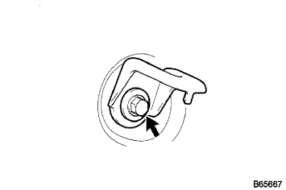

リヤシートASSY(一体可倒式) 組み付け |
| 1. チャイルドレストレイント シート アンカ ブラケット RH取り付け |
図の4のボルトを、仮締めする。
ボルト4本を、1→2→3→4の順に締め付ける。
フロアカーペットを取り付ける。
| 2. リヤシートバック ヒンジSUB-ASSY RH取り付け |
|  |
ボルトで、リヤシートバツクヒンジRHを締め付ける。
| 3. リヤシートバック ヒンジSUB-ASSY LH取り付け |
ボルトで、リヤシートバツクヒンジLHを締め付ける。
| 4. リヤシートバック ロックASSY RH取り付け |
 |
ボルト2本で、リヤシートバツクロックASSY RHを締め付ける。
| 5. リヤシートバック ロックASSY LH取り付け |
ボルト2本で、リヤシートバツクロックASSY LHを締め付ける。
| 6. リヤシートバツク アンダ クロース取り付け |
リヤシートバツクアンダークロスを、リヤシートバツクフレームASSYに取り付ける。
| 7. リヤシートバック パッドSUB-ASSY(カバー ツキ)取り付け |
 |
ホグリングプライヤーを使用して、新品のホグリングでリヤシートバツクカバー & パッドを取り付ける。
リヤシートバツクカバーに新品のクリップを取り付ける。
| 8. リヤシートバックストップボタン グロメット取り付け |
グロメットを取り付ける。
| 9. リヤシートヘッドレスト サポート取り付け |
シートバツクASSYにヘッドレストサポート6個を取り付ける。
| 10. リヤシートバックストップレリーズ ボタン取り付け |
手でレリーズボタンを回し、リヤシートバツクストップレリーズボタンを取り付ける。
| 11. リヤシート ヘッドレストASSY CTR取り付け |
リヤシートバツクASSYにリヤシートヘッドレストASSY CTRを取り付ける。
| 12. リヤシート ヘッドレストASSY取り付け |
リヤシートバツクASSYにリヤシートヘッドレストASSY2個を取り付ける。
| 13. リヤシートクッションアンダ クロス取り付け |
リヤシートクッションアンダクロスを、リヤシートクッションフレームASSYに取り付ける。
| 14. リヤシート クッション カバー ＆ パッド取り付け |
|
ホグリングプライヤーを使用して、新品のホグリングでリヤシート クッション カバー ＆ パッドを取り付ける。